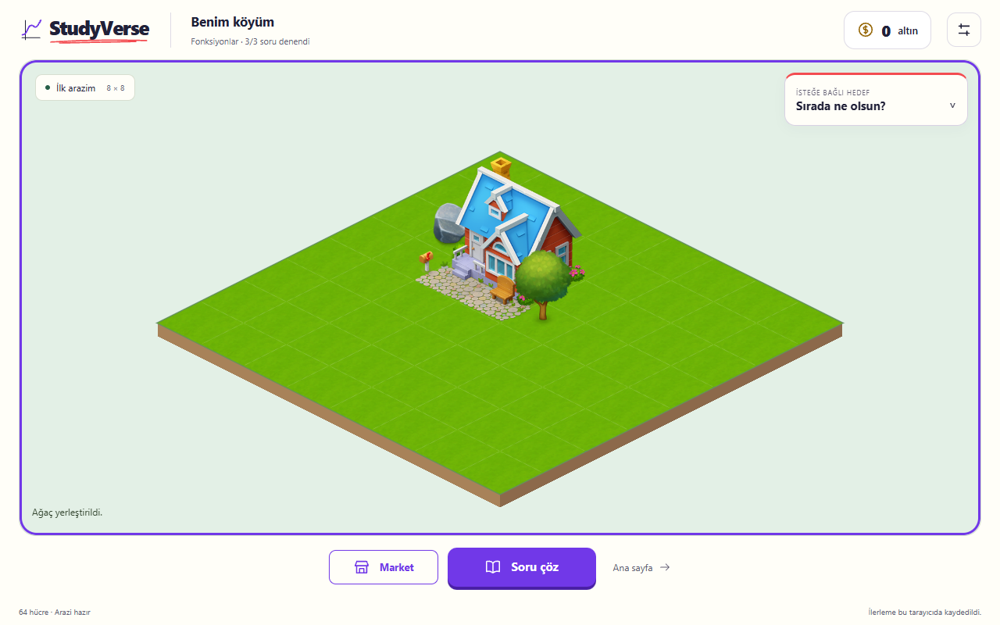
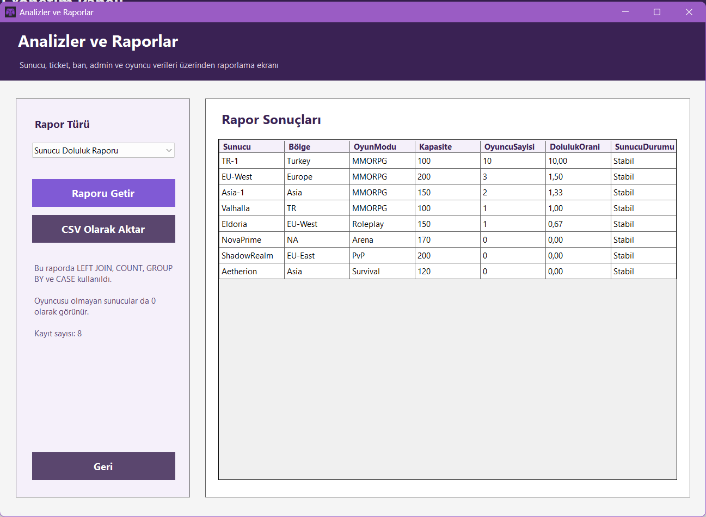

Psikolojik korku
Mewmory
Kediler, sırlar ve karanlık bir pixel-art atmosferi.
Yeni başlandıKediler, sırlar ve karanlık bir pixel-art atmosferi.
Yeni başlandı
Fonksiyon sorularını çöz, altın kazan ve izometrik köyünü geliştir.
Oynanabilir prototip · Geliştirme aşamasında
Sushi adlı kedinin ihtiyaçlarını dengelediğin sanal evcil hayvan oyunu.
Durum bilgisi bekleniyor
WinForms yönetim panelini besleyen sunucu, oyuncu ve raporlama verileri.
Durum bilgisi bekleniyor
SQL Server bağlantılı masaüstü yönetim paneli.
Durum bilgisi bekleniyorJLPT N5 düzeyinde Japonca çalışmak için kedi temalı bir Java uygulaması.
Aktif geliştirmeWeb, kod ve tasarımı bir araya getiren kişisel sitem.
Web’de erişilebilirCats, secrets and a dark pixel-art atmosphere.
Just startedSolve function questions, earn gold and build an isometric village.
Playable prototype · In developmentA virtual pet game about keeping a cat named Sushi happy.
Status to be confirmedServer, player and reporting data for the WinForms administration panel.
Status to be confirmedA desktop administration panel connected to SQL Server.
Status to be confirmedA cat-themed Java app for studying Japanese at JLPT N5 level.
In active developmentMy personal site brings together web development, code and design.
Available on the web